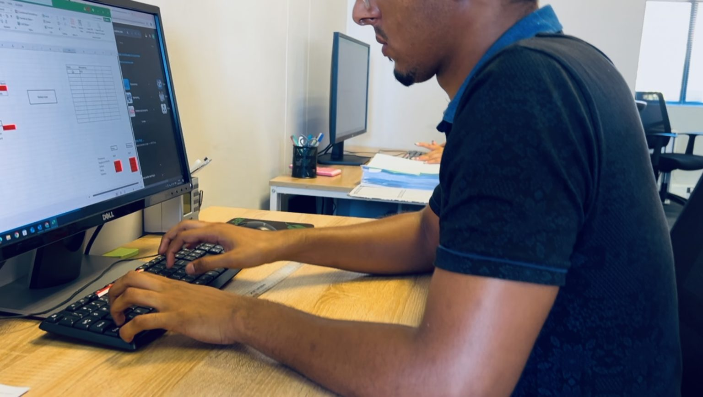
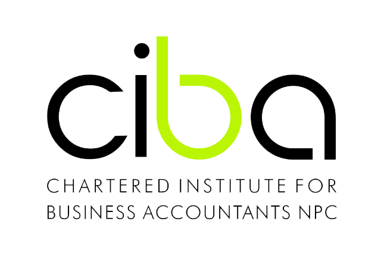
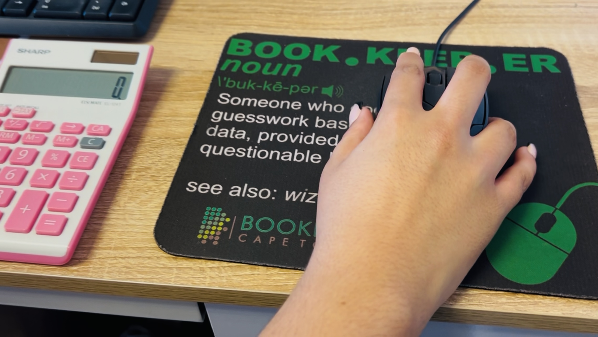
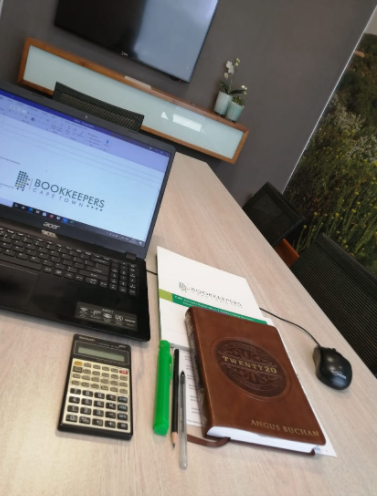

“Simplify your business’s financial management with Bookkeepers SA, a trusted provider of professional bookkeeping, tax compliance and business registration services in South Africa.”
Bookkeepers South Africa grew out of a Cape Town practice built on getting the fundamentals right — clean records, payroll that runs on time, and tax submissions that never leave you guessing. As our client base grew into Gauteng, we opened a Johannesburg office so the same standard of work is available in both cities.
Every engagement starts with understanding how your business actually operates, then building a plan around it.

Four core services, built to work together so nothing falls between your bookkeeper, your payroll and your tax submissions.
Accurate, up-to-date financial records so you always know where your business stands.
Payroll processing, payslips and statutory filings handled on schedule, for businesses of any size.
Tax preparation and SARS submissions managed by people who keep up with the compliance calendar.
Company registrations handled efficiently and correctly, from first filing to confirmation.

Three steps, from first conversation to ongoing support.

We talk through your goals, your current challenges, and what your business needs.
Bookkeeping, payroll and tax compliance scoped to your business, not a one-size-fits-all package.

Your books stay current, payroll runs on time, and someone picks up when SARS sends a letter.
Speak to our Cape Town or Johannesburg team, Monday to Friday, 8:00–16:00.
Unit 129, Millennium Business Park
Century City, Cape Town, 7441
West Tower, 2nd Floor, Nelson Mandela Square
Maude Street, Sandown, 2146
The things business owners usually ask before switching bookkeepers.